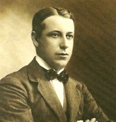
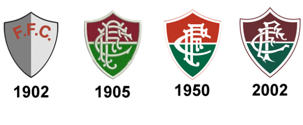
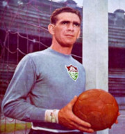
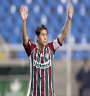
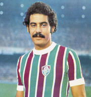
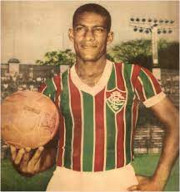
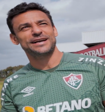

Fundação
Fundado em 21 de julho de 1902, por Oscar Cox, jovem filho de um cidadão inglês vice-cônsul da Inglaterra no Equador, o Fluminense Football Club levava, à época, as cores cinza e branco. Cox é um dos grandes responsáveis pela chegada do futebol ao Brasil. Em diversas idas à “Terra da Rainha”, sempre trazia novidades, bolas, materiais esportivos. Também jogou, foi campeão Carioca de 1906, quando o Flu já era verde, branco e grená. Com problemas para adquirir o tecido cinza para o uniforme original, em 1904 foi aprovada a alteração, nascendo o Tricolor.
Pioneiro, o Fluminense construiu o primeiro estádio de cimento da América Latina, o Estádio de Laranjeiras, que foi sede do Campeonato Sul-Americano de Seleções, atual Copa América, e dos Jogos Olímpicos Latino-Americanos, atualmente Jogos Pan-Americanos, e foi palco do primeiro título relevante da Seleção Brasileira.
Considerada o Prêmio Nobel do Esporte, o Fluminense é o único clube da América Latina que detém a Taça Olímpica, em 1949, além de ser o único clube de futebol do mundo ter seu nome inscrito na honraria concedida pelo Comitê Olímpico Internacional por serviços prestados ao esporte.
A história
O nome Fluminense Football Club foi escolhido na fundação do clube em 21 de julho de 1902. Embora a primeira ideia fosse chamá-lo de Rio Football Club, a opção por Fluminense, derivada do termo latino flúmen que significa "rio", prevaleceu. O termo também era utilizado para se referir aos habitantes do Estado do Rio de Janeiro, segundo a Constituição brasileira de 1891 (Flūmen Januarii, em latim). O Fluminense tem uma história rica em demonstrações de civismo. Durante a Primeira Guerra Mundial, o clube formou um batalhão que recrutou 83 reservistas em seu primeiro momento, um movimento que inspirou outras entidades esportivas. Além disso, o Fluminense sediou e patrocinou o Campeonato Sul-Americano de Futebol em 1919 e 1922 e os Jogos Olímpicos Latino-Americanos de 1922, que foram uma das principais comemorações do Centenário da Independência do Brasil.
Em 1920, o atleta tricolor Afrânio Antônio da Costa ganhou a primeira medalha olímpica para o Brasil e, juntamente com Guilherme Paraense, fez parte da equipe brasileira que ganhou a medalha de bronze. Em 1937, o Fluminense criou uma Escola de Instrução Militar e, durante 1940 e 1941, ficou em primeiro lugar em eficiência e disciplina no Distrito Federal. Em 1942, o clube preparou um curso de enfermagem para ajudar os soldados da Força Expedicionária Brasileira e doou um avião para a Força Aérea Brasileira.
O estádio do Fluminense foi sede de jogos importantes de futebol carioca e da Seleção Brasileira e foi apontado como a organização esportiva mais perfeita do mundo pela FIFA em 1949. A atleta de saltos ornamentais Juliana Veloso é a atleta brasileira com mais participações nos Jogos Pan-Americanos e possui várias medalhas de campeonatos sul-americanos. Como o clube com mais títulos estaduais no Rio de Janeiro no século XX, o Fluminense é conhecido como campeão carioca do século XX e conquistou 30 títulos estaduais em 2005, tornando-se o primeiro clube do eixo Rio-São Paulo a alcançar esse feito.
Escudos do Fluminense
O escudo do Fluminense passou por algumas reformulações e modernizações durante seus anos de existência, até chegar ao mais atual deles.
Títulos
- Copa Rio Internacional - 1952
- Campeonato brasileiro - 1970, 1984, 2010 e 2012
- Copa do Brasil - 2007
- Campeonato brasileiro - Série C - 1999
- Taça Loduran - 1919
- Torneio Rio-São Paulo - 1957 e 1960
- Primeira Liga - 2016
- Campeonato Carioca - 1906, 1907, 1908, 1909, 1911, 1917, 1918, 1919, 1924, 1936, 1937, 1938, 1940, 1941, 1946, 1951, 1959, 1964, 1969, 1971, 1973, 1975, 1976, 1980, 1983, 1984, 1985, 1995, 2002, 2005, 2012 e 2022.
- Copa Rio estadual- 1998
- Taça Guanabara Independente - 1966, 1969 e 1971
- Torneio Início - 1916, 1924, 1925, 1940, 1941, 1943, 1954, 1956 e 1965.
- Torneio Municipal do Rio de Janeiro - 1938 e 1948
- Torneio Extra - 1941
- Taça Loduran - 1919
- Torneio Aberto do Rio de Janeiro - 1935
- Taça Brasil - Zona Sul - 1960
- Taça Guanabara - 1975, 1983, 1985, 1991, 1993, 2012, 2017 e 2022.
- Taça Rio - 1990, 2005, 2018 e 2020
- Torneio Aberto do Rio de Janeiro - 1935
- Taça Brasil - Zona Sul - 1960
Honrarias
- Clube Clássico FIFA - 2008
- Taça Olímpica - 1949
- Campeão Carioca do Século XX - 1906 - 2000
Ídolos
-

Castilho
Recordista de jogos pelo clube e titular por quase 20 anos.
-

Dário Conca
Campeão brasileiro de 2010 sendo eleito craque do campeonato.
-

Rivellino
Bicampeão carioca, além de eternizar o elástico em um lance memorável contra o Vasco da Gama.
-

Waldo
Maior artilheiro da história do Fluminense.
-

Fred
Bicampeão brasileiro, campeão carioca e maior ídolo contemporâneo do Fluminense.